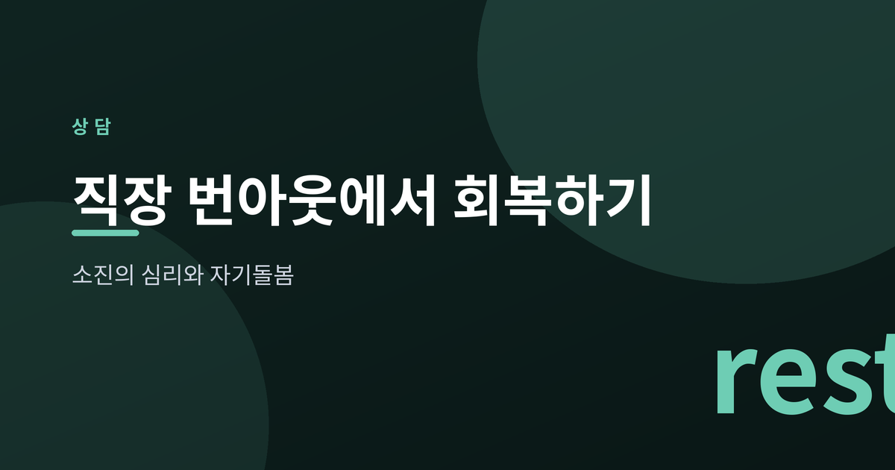
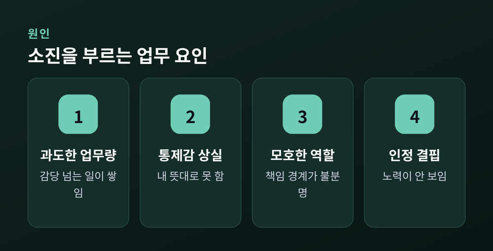
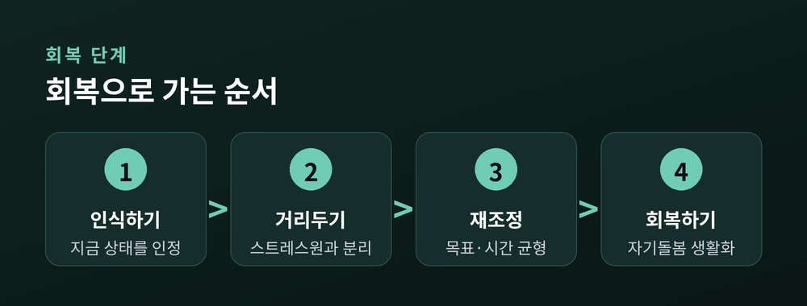
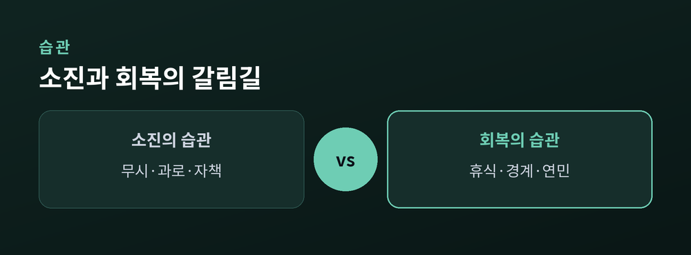

소진의 심리와 자기돌봄

아침에 눈을 떠도 몸이 무겁습니다. 잠을 채워도 피로는 가시지 않습니다. 오늘은 그 무거움의 정체를 함께 들여다보려 합니다.
번아웃은 게으름이 아닙니다. 세계보건기구(WHO)는 국제질병분류 ICD-11에서 번아웃을 '적절히 관리되지 못한 만성적 직무 스트레스'로 정의합니다. 이는 개인의 나약함이 아니라, 오래 지속된 상황의 결과입니다.
WHO는 번아웃의 세 축을 이렇게 설명합니다. 첫째, 에너지가 고갈된 정서적 소진. 둘째, 일에 대한 거리감과 냉소. 셋째, 효능감의 저하입니다. 즉 지치고, 무감해지고, 스스로가 무력하게 느껴지는 상태입니다.
주의할 점이 있습니다. 번아웃은 질병 진단이 아니라 '직업적 현상'으로 분류됩니다. 그러나 방치하면 우울이나 신체 증상으로 번질 수 있습니다.
원인은 개인 안에만 있지 않습니다. 과도한 업무량, 통제감의 상실, 모호한 역할, 인정받지 못한다는 느낌이 겹칠 때 소진은 서서히 자랍니다. 성실한 사람일수록 더 오래 버티다 무너지기도 합니다.
소진은 한순간에 오지 않습니다. 경고 신호를 무시하며 계속 달리는 초기 단계, 두통이나 수면 문제 같은 신체 증상이 나타나는 저항 단계, 흥미와 효능감이 바닥나는 소진 단계로 이어집니다. 그래서 이른 알아차림이 중요합니다.

몸과 마음은 먼저 말을 겁니다. 다음 신호가 여럿 겹친다면 잠시 멈춰 살펴볼 때입니다.
이 신호는 약함의 증거가 아닙니다. 회복이 필요하다는 마음의 정직한 언어입니다.

회복은 결심 하나로 끝나지 않습니다. 순서가 있습니다. 먼저 지금의 상태를 있는 그대로 인정합니다. 다음으로 스트레스원과 거리를 둡니다. 퇴근 후 업무 알림을 끄는 '연결되지 않을 권리'는 작지만 분명한 시작입니다.
그다음은 재조정입니다. 목표와 시간, 관계의 균형을 다시 잡습니다. 건강한 자기돌봄은 화려하지 않습니다. 규칙적인 수면과 식사, 가벼운 산책, 감각을 쉬게 하는 짧은 휴식이면 충분합니다. 자책 대신 자기연민을, 완벽 대신 회복을 택하는 것입니다.
경계를 세우는 일도 돌봄입니다. 과한 요구에 정중히 '아니요'라고 말하는 연습은 나를 지키는 방식입니다. 그리고 혼자 견디지 않아도 됩니다. 곁의 사람과 마음을 나누는 것만으로도 짐은 조금 가벼워집니다.

번아웃은 끝이 아니라, 삶의 속도를 다시 묻는 신호입니다. 오늘 자신에게 건네는 작은 쉼 하나가, 내일의 나를 지킵니다.
증상이 심하거나 오래 지속된다면, 혼자 애쓰기보다 전문 상담기관이나 의료기관의 도움을 받으시길 권합니다.